每个土生土长的北海人都懂的——北海老街地道小吃
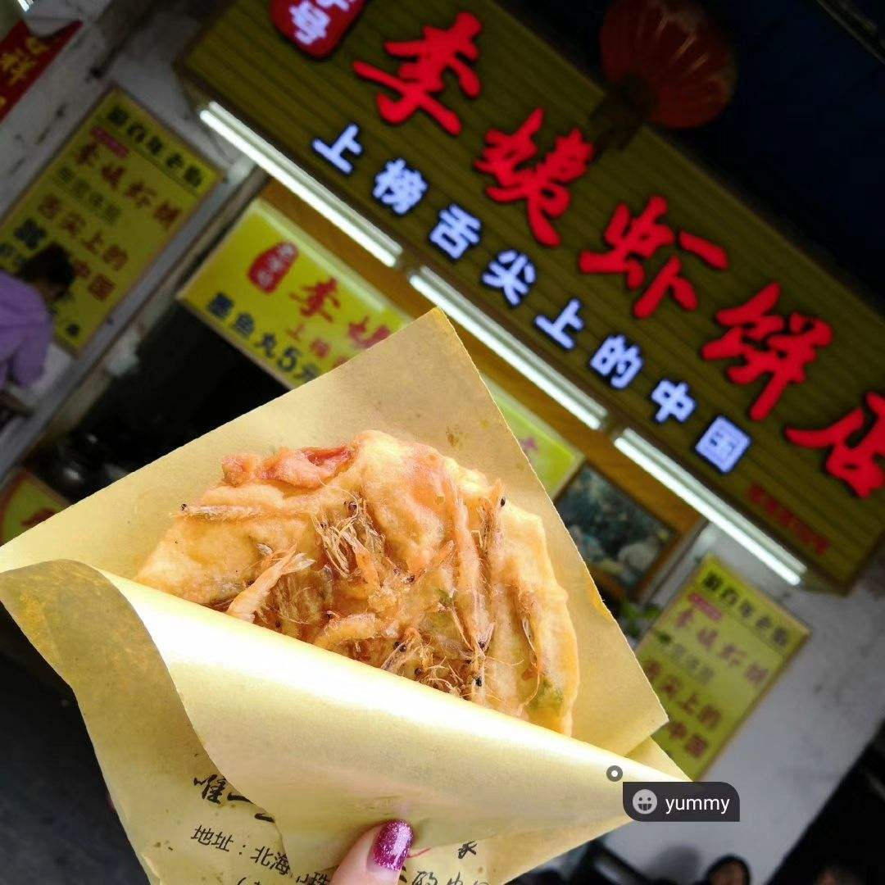 北海虾仔饼外面酥脆，里面香嫩，淋上红红的椒盐，老人孩子都喜欢吃。虾仔饼不仅去过北京、上过央视，还是北海人过节祭祀的美食，现在已经成为北海的招牌小吃。
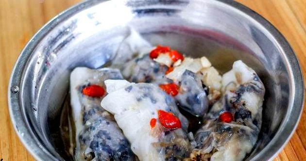 明英卷粉在老街，已有30多年的高龄，北海人的早餐基本是被它承包的。30年多年来，明英卷粉保持初心只卖一款卷粉，木耳肉末洋葱馅，搭配秘制蒜蓉汤汁，一口下去，入口即化，就是这个味儿。
其它小炒、小吃 、烧烤
除上面那些之外，老街和一些市场上也有很多卖海味干货的店铺，海味干货也算是北海的一种特产。
附上一些装修有特点的店铺照片
侨港风情街作为美食街，拥有的美食可多了~
推荐一些吃上面美食的店铺
侨越 越南卷粉店
在北海少不了各种各样的粉店🍜
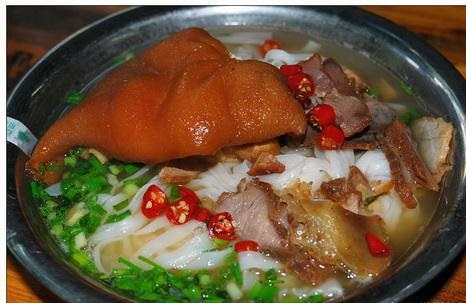 猪脚粉里面的猪脚经和胡椒、八角等食材焖炖后咬上一口，蹄筋劲道，猪皮脆香，卤汁四溢。咸味十足的猪脚与寡淡的米粉仿佛两重天，让人顾不上佛系，只记得大声吸溜，大口撕咬，大快朵颐。
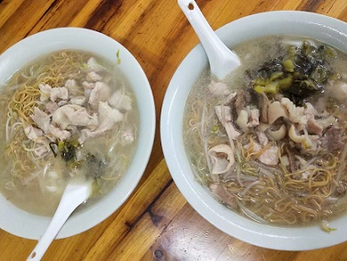 如同它的名字，就是大，一份就是一个超大的盆，可以选择不同的材料煮，有猪杂、牛杂、海鲜，北海最出名的大碗粉要属茶亭路与广东路交汇处的几家老店！
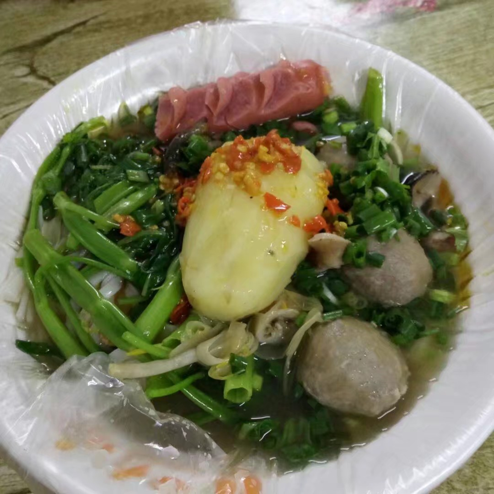 北海有很多牛杂粉店，在长青路那里居多，牛杂粉不仅仅是有牛杂，还有其他的食材，都是放到大锅里面煮，你想要哪一种就和老板说就好了。
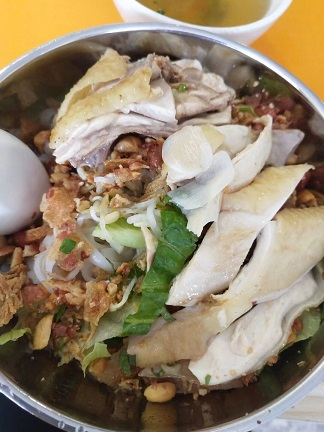 虽然鸡肉粉不是北海的特色，但是以为好吃，所以推荐，比较推荐北海大道路上一家叫越南妹鸡丝粉的店铺。
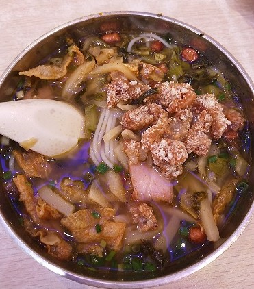 黄李记是一家很有历史的店铺了，记得读初中时候就吃过它家了，现在也已经有了几家分店，总店在三中路那边，推荐它家的爽口肉，配着粉吃简直太棒了。🥩
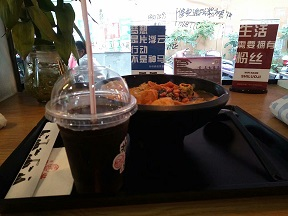 拾螺记我记得大概是我上高中时候开的店，也是在三中路那边，不过现在也已经有分店了。
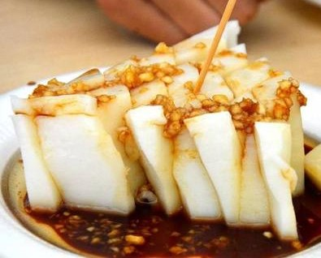 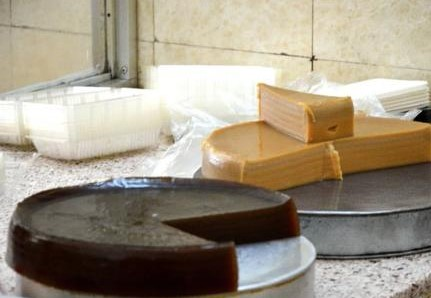 水籺，是广西北海市南康镇的一道特色小吃，分甜的和咸的，如果不去到南康镇，在北海街上找一家南康人开的店买来尝尝也是不错的。
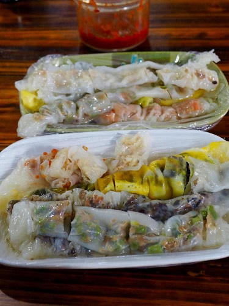 虽然肠粉是广州的特色，但是北海的肠粉也是好吃的，特别推荐长青路东记肠粉店和荣记肠粉店。
在北海还有各种各样的籺